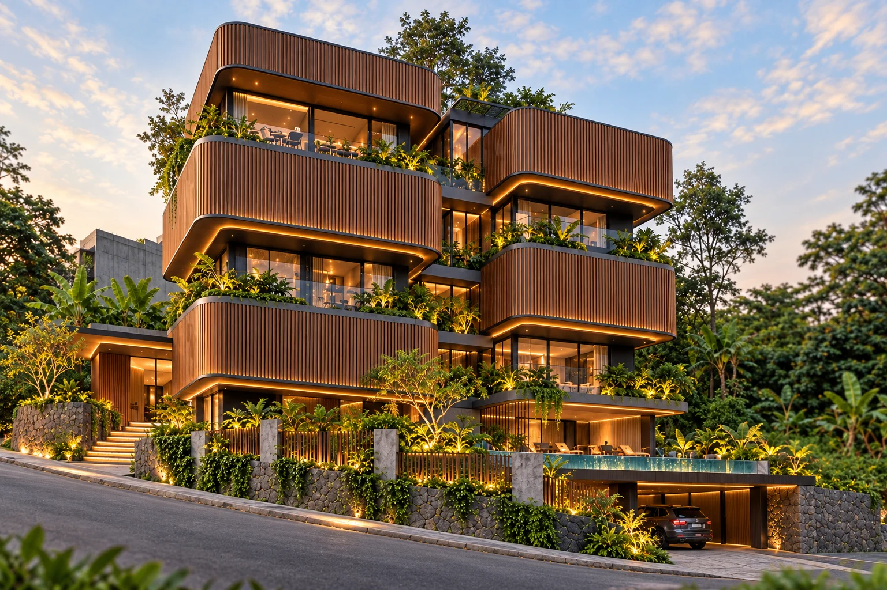

MARKSTUDIOS / SETRASARI, BANDUNG
Life, in
layers.
Kayu yang hangat. Ruang yang tenang.
Arsitektur yang mengikuti tanah.
01 / A PLACE TO BELONG
Mengikuti kontur.
Membuka ruang hidup.
Kuro menyusun ruang tinggal, wellness dan pertemuan dalam enam lantai di atas basement utilitas. Bilah ulin membungkus sudut melengkung, sementara taman bertingkat memberi jeda di antara ruang.
*Studi konsep. Modul kamar 3,2 × 7,5 m berbentuk persegi panjang. Angka 24 m² belum luas bersih setelah dinding. Ukuran fasad belum terverifikasi oleh survei; foto tetap ilustrasi konsep sebelumnya.
02 / ARCHITECTURE, UNFOLDED
One building.
Six stories.
Enam lantai + basement utility.
Scroll untuk memisahkan lantai.
Pilih level untuk menjelajahi program.
Arrival & service
03 / FLOOR EXPLORER
A closer look.
Setiap level punya perannya.
Telusuri susunan dan ukuran awal.
- Bentuk lahan
- Trapesium tidak beraturan
- Jejak konsep
- 500 m²
- KDB konsep
- 58,48%
Diagram zonasi, bukan gambar kerja. Bukaan, jalur core, teras, aksesibilitas dan struktur masih perlu koordinasi. 20 modul kamar dan 24 petak terdiagram; bukan kapasitas final tersertifikasi.
P / PARKING TEST-FIT 04
Two parking levels.
Every bay counted.
24 posisi terdiagram: 12 ground + 12 lantai 1. Setiap petak berukuran 2,6 × 5 m, dengan aisle utama 6,6 m sebagai asumsi studi. Ground dan L1 sama-sama memuat lobby. Basement hanya untuk utilitas.
Target 36 mobil masih kurang 12 posisi. Luas petak untuk 18 mobil per lantai saja mencapai 234 m². Sisa 266 m² harus sekaligus mengakomodasi aisle, core, lobby, struktur dan akses antar lantai; angka 36 tidak otomatis muat.
Opsi hemat ruang: lift mobil, tanpa ramp internal pada test-fit ini. Ini usulan sistem akses, belum pemilihan vendor. Jika akses ramp wajib, denah dan kapasitas perlu dihitung ulang. Tidak ada double counting area antrean sebagai petak.
Belum dapat menyatakan kapasitas maksimum atau 36 mobil terpenuhi. Perlu survei batas dan kontur, perhitungan antrean lift, swept-path, akses jalan, jalur pedestrian terlindung, kolom, evakuasi serta persetujuan teknis. Peluang parkir luar massa harus diuji terhadap sempadan, ruang hijau dan lereng; belum dihitung.
Acuan awal sirkulasi: PP 16/2021, lampiran fasilitas parkir. Penerapan pada persil dan izin setempat perlu verifikasi teknis.
| Level | Program revisi | Jumlah |
|---|---|---|
| B | Utilitas & servis | 0 mobil |
| G + L1 | Parkir + lobby | 24 petak |
| L2 | Pool, gym, office, meeting | 0 kamar |
| L3 + L4 | Kamar ortogonal 3,2 × 7,5 m | 20 modul |
| L5 | Cafe + teras | Kursi belum ditetapkan |
04 / MATERIAL & ATMOSPHERE
Naturally warm.
Quietly bold.
Ulin, kaca gelap dan cahaya amber. Irama bilah vertikal mempertegas massa, dengan sudut rounded dan planter yang melembutkan pertemuan antar lantai.
05 / BUILT WITH THE SLOPE
The land leads.
The building responds.
Tanah naik ke belakang dan jalan menanjak sepanjang muka lahan. Akses kendaraan diarahkan ke sisi rendah; landscape bertingkat dan retaining wall mengikuti perubahan elevasi.
Yang masih perlu dikunci
Survei topografi, sempadan dan tinggi legal, jalur pemadam, stabilitas lereng serta drainase. Dua lantai parkir terhubung lift mobil pada studi ini; basement menjadi utilitas. Elevasi lantai, kedalaman galian, drainase lereng, beban kolam dan struktur penahan tanah belum ditetapkan. Fasad ulin pada foto belum mencerminkan perubahan program terbaru.